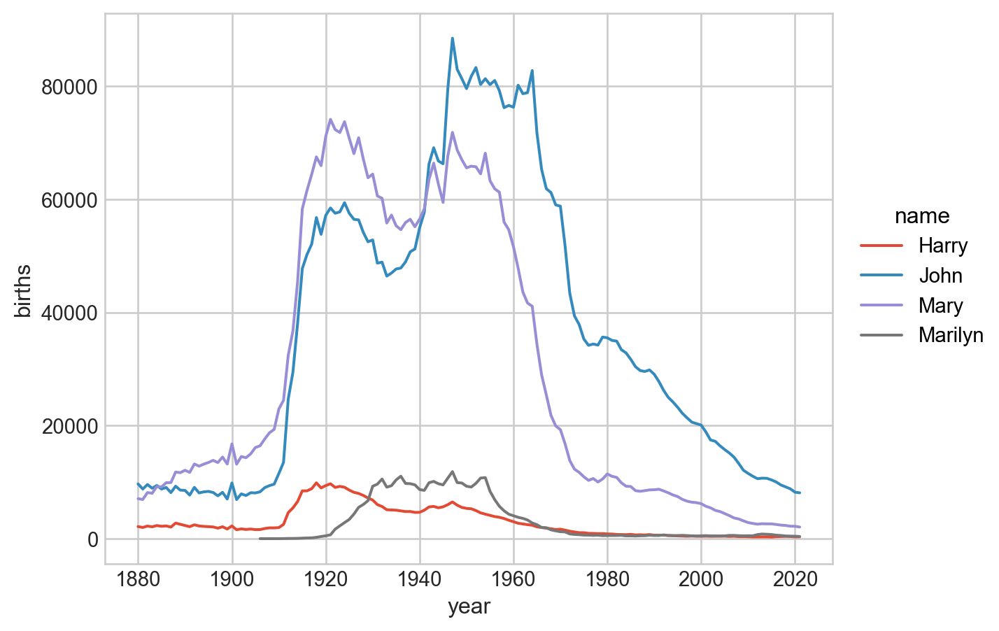
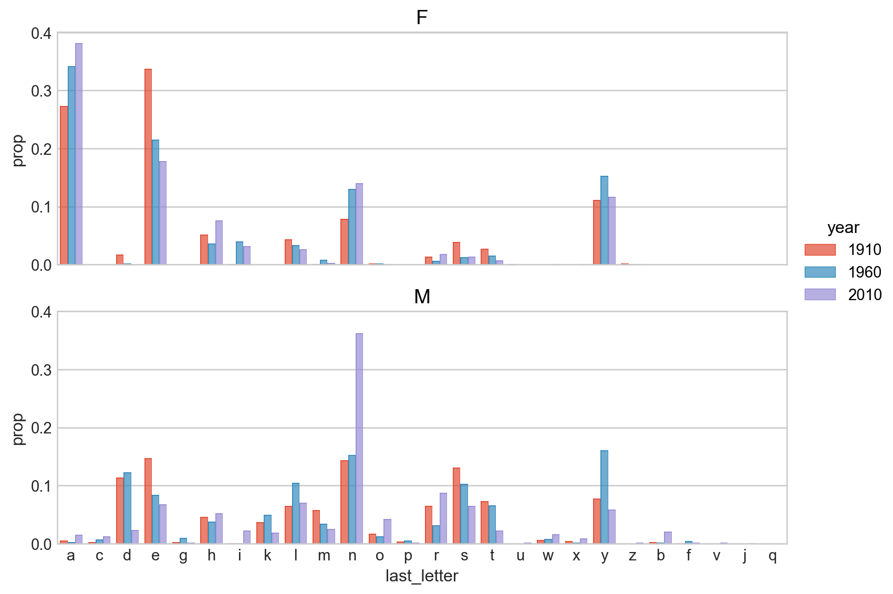
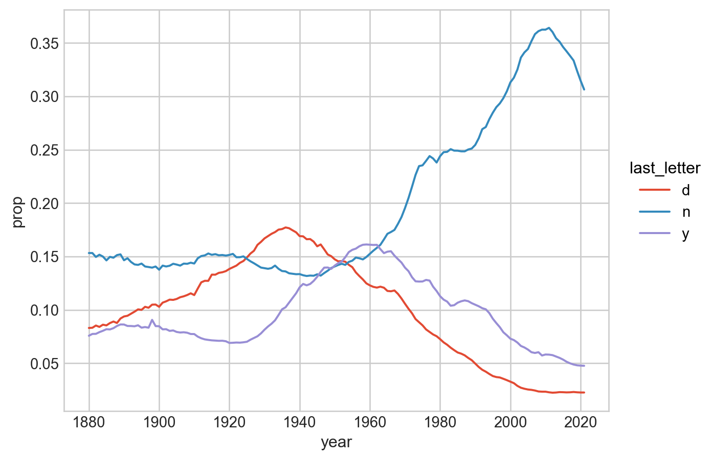

# numerical calculation & data framesimport numpy as npimport pandas as pd# visualizationimport matplotlib.pyplot as pltimport seaborn as snsimport seaborn.objects as so# statisticsimport statsmodels.api as sm# pandas optionspd.set_option('mode.copy_on_write', True) # pandas 2.0pd.options.display.float_format ='{:.2f}'.format# pd.reset_option('display.float_format')pd.options.display.max_rows =7# max number of rows to display# NumPy optionsnp.set_printoptions(precision =2, suppress=True) # suppress scientific notation# For high resolution displayimport matplotlib_inlinematplotlib_inline.backend_inline.set_matplotlib_formats("retina")
name sex births year
0 Mary F 7065 1880
1 Anna F 2604 1880
2 Emma F 2003 1880
... ... .. ... ...
2052778 Zyian M 5 2021
2052779 Zylar M 5 2021
2052780 Zyn M 5 2021
[2052781 rows x 4 columns]
year sex births
0 1880 F 90994
1 1880 M 110490
2 1881 F 91953
.. ... .. ...
281 2020 M 1718248
282 2021 F 1627098
283 2021 M 1734277
[284 rows x 3 columns]
name sex births year prop
0 Mary F 7065 1880 0.08
1 Anna F 2604 1880 0.03
2 Emma F 2003 1880 0.02
... ... .. ... ... ...
2052778 Zyian M 5 2021 0.00
2052779 Zylar M 5 2021 0.00
2052780 Zyn M 5 2021 0.00
[2052781 rows x 5 columns]
4. 이제 names에서 각 연도에서 남녀별 인기있는 이름 1000개씩을 추립니다.
즉, 1880년 인기있는 여자아이 1000개, 남자아이 1000개를 추리고, 1881년에도 마찬가지…
인기있다는 것은 그 이름의 출생아 수가 많다는 의미입니다.
3번과 마찬가지로, year, sex로 그룹핑을 한 후
grouped object에 sort_values method를 적용하여 상위 1000개를 추출하는 함수 세워 apply로 적용해 보세요.
code
def get_top1000(group):return group.sort_values("births", ascending=False)[:1000]top1000 = names.groupby(["year", "sex"], group_keys=False).apply( get_top1000) # group_keys=False: 그룹핑 한 변수들을 인덱스로 사용하지 않음
top1000
name sex births year prop
0 Mary F 7065 1880 0.08
1 Anna F 2604 1880 0.03
2 Emma F 2003 1880 0.02
... ... .. ... ... ...
2039793 Ronnie M 217 2021 0.00
2039792 Merrick M 217 2021 0.00
2039791 Mayson M 217 2021 0.00
[283876 rows x 5 columns]
Analyzing Naming Trends
이제 위에서 구한 top1000 데이터를 이용하여 분석합니다.
A sample trend
5. 각 아기 이름들의 시간에 따른 트렌드를 살펴보는데,
각 년도별, 이름별 총 출생아 수를 구한 후; total_birth
몇 개의 이름 (John, Harry, Mary, Marilyn)에 대해서, 시간에 따른 이름의 변화를 살펴봅니다.
# total_births의 MultiIndex를 직접 이용해 subsetting을 하려면subset = total_births.loc[:, ["John", "Harry", "Mary", "Marilyn"]] # .loc[첫번째 인덱스, 두번째 인덱스]subset = subset.reset_index() # seaborn을 이용하기 위해서 DataFrame으로 변환# 또는 DataFrame으로 먼저 변환한 후에 query를 이용subset = total_births.reset_index().query('name in ["John", "Harry", "Mary", "Marilyn"]')# visualization( so.Plot(subset, x='year', y='births', color='name') .add(so.Line()))

Measuring the increase in naming diversity
6. 이제 이름의 다양성이 시간에 따라 어떻게 변화하는지를 살펴봅니다.
top1000은 이미 각 년도별, 성별에 따른 인기있는 이름 1000개씩을 추려놓은 데이터프레임입니다.
이제 년도별, 성별에 따른 비율(prop)의 합의 의미를 잘 생각해보면,
이는 인기있는 1000개의 이름을 가진 아이들의 총 비율이 되는데,
이 비율이 적다는 것은 더 다양한 이름이 사용되고 있다는 것을 의미합니다.
아래 시각화에서 나타나듯이, 이름의 다양성은 시간이 지남에 따라 증가하며, 특히 여자 이름이 더욱 그러한 것을 알 수 있습니다.
top1000
name sex births year prop
0 Mary F 7065 1880 0.08
1 Anna F 2604 1880 0.03
2 Emma F 2003 1880 0.02
... ... .. ... ... ...
2039793 Ronnie M 217 2021 0.00
2039792 Merrick M 217 2021 0.00
2039791 Mayson M 217 2021 0.00
[283876 rows x 5 columns]
“In 2007, baby name researcher Laura Wattenberg pointed out that the distribution of boy names by final letter has changed significantly over the last 100 years.” (p. 452)
이름의 마지막 철자는 이름의 느낌을 좌우해서인지 특히 자주 쓰이는 철자가 있으며, 그 트렌드도 시간에 따라 크게 변화하는 것 같습니다.
이제, 이름의 마지막 철자가 시간에 따라 어떻게 변화하는지 살펴봅니다.
8. 아래와 같이 이름의 마지막 철자를 last_letter라는 칼럼에 추가합니다.
문자열의 마지막 철자를 구하는 함수를 구한 후,
names데이터의 name 칼럼을 Series로 추출 후 .map Series method를 이용하여 적용합니다.
code
# 함수를 이용해 이름의 마지막 글자를 추출def get_last_letter(x):return x[-1]last_letters = names["name"].map(get_last_letter)# 또는 간단히 lambda 함수를 이용last_letters = names["name"].map(lambda x: x[-1])# DataFrame에 새로운 열로 추가names["last_letter"] = last_letters
names
name sex births year prop last_letter
0 Mary F 7065 1880 0.08 y
1 Anna F 2604 1880 0.03 a
2 Emma F 2003 1880 0.02 a
... ... .. ... ... ... ...
2052778 Zyian M 5 2021 0.00 n
2052779 Zylar M 5 2021 0.00 r
2052780 Zyn M 5 2021 0.00 n
[2052781 rows x 6 columns]
9. 이제 아래와 같이 각 연도별, 성별에 따른 last_letter로 끝나는 이름을 가진 출생아 수를 구해보세요.
year sex last_letter births
0 1880 F a 31446
1 1880 F d 609
2 1880 F e 33381
... ... .. ... ...
6734 2021 M x 21014
6735 2021 M y 82625
6736 2021 M z 3519
[6737 rows x 4 columns]
10. 우선 3개 년도 1910, 1960, 2010에 한해 살펴보는데, births의 비율을 다음과 같이 시각화 해보세요.
1910, 1960, 2010년도로 필터링한 후
각 년도별, 성별에 따른 last_letter로 철자가 끝나는 출생아 수의 비율을 구합니다.
이를 이용해 다음과 같이 시각화 해보세요.
이 플랏에서 남자 이름의 경우, “d”, “n”, “y”로 끝나는 이름이 많고 변화가 크다는 것을 볼 수 있습니다.
code
# Filteringsubtable = table.query('year in [1910, 1960, 2010]')# transform을 이용해서 비율을 구하거나subtable["total"] = subtable.groupby(["year", "sex"])["births"].transform("sum")subtable = subtable.assign(prop =lambda x: x["births"] / x["total"])# 앞서와 같이 함수를 이용해서 비율을 구할 수도 있음def add_prop(group): group = group.assign(prop =lambda x: x.births / x.births.sum())return groupsubtable = subtable.groupby(["year", "sex"], group_keys=False).apply(add_prop)display(subtable)# Visualization( so.Plot(subtable, x='last_letter', y='prop', color="year") .add(so.Bar(), so.Dodge()) .facet(row="sex") .layout(size=(8, 6)) .scale(color=so.Nominal()) # year가 연속형 변수라 범주형으로 바꾸어 구별되는 색으로 표현되도록 함)
year sex last_letter births total prop
1260 1910 F a 108399 396505 0.27
1261 1910 F c 5 396505 0.00
1262 1910 F d 6751 396505 0.02
... ... .. ... ... ... ...
6162 2010 M x 16487 1917416 0.01
6163 2010 M y 111600 1917416 0.06
6164 2010 M z 3507 1917416 0.00
[145 rows x 6 columns]

11. 이제 ‘d’, ‘n’, ’y’로 끝나는 남자 이름의 시간에 따른 변화를 다음과 같이 시각화 해보세요.
위에 table 데이터를 이용해 모든 년도에 대해 last_letter의 비율을 구해보세요.
남자아이이고 ‘d’, ‘n’, ’y’로 끝나는 이름으로 필터링 한 후 시각화 합니다.
code
# 앞서 정의한 `add_prop` 함수를 이용해서 비율을 구함table = table.groupby(["year", "sex"], group_keys=False).apply(add_prop)# visualization( so.Plot( table.query('sex == "M" and last_letter in ["d", "n", "y"]'), x="year", y="prop", color="last_letter", ) .add(so.Line()))

Boy names that became girl names (and vice versa)
남자 아이의 이름이였다가 여자 아이의 이름으로 점차 변하고 있는 경우가 있습니다. (혹은 반대)
아래와 같이 Leslie와 비슷한 철자를 가진 발음이 비슷한 이름들을 살펴보면,
# 유닉크한 이름을 Series로 추출all_names = pd.Series(top1000["name"].unique()) # .unique(): numpy array로 반환됨# `Lesl` 문자열을 포함하는 이름들 추출lesley_like = all_names[all_names.str.contains("Lesl")] # Series의 method로 .str.contains()는 문자열 포함 여부를 판단